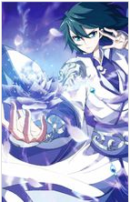

萧炎
主人公。天资卓越，毅力惊人。4岁练气，10岁拥有九段斗之气，11岁成功凝聚斗之气旋，一跃成为家族百年之内最年轻的斗者。然而却从12岁那年开始萧炎连续三年莫名其妙地退化成斗之气三段，从此逐渐沦为遭人白眼的废柴。之后得知原因竟是有一个神秘的灵魂“药老”藏在萧炎母亲的遗物戒指中不断吸收他的斗之气，在药老停止吸收斗之气并答应帮他重展天资后，一年时间内突破至斗之气七段，震惊全城。后来萧炎踏上了修炼之旅，以他的执着与信念闯荡大陆，一路历经坎坷，向着巅峰强者之途迈进，最终收服天下万火，成为万火之帝，号"炎帝"。与“魂天帝”展开“双帝之战”后以牺牲肉身为代价将其封印，还斗气大陆和平安定。为了寻找斗气大陆斗帝失踪之谜，进入大千世界，创立“无尽火域”。大千盟约大战中以超脱圣品，现已在苍穹榜上留下完整姓名，晋级主宰境。